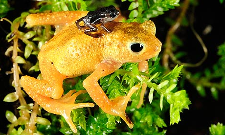

Saturday, August the 21st, 2010
back to: title, date or indexes
Time now for the ever-popular Hooting Yard Toad Quiz, where you can sharpen your wits by testing your knowledge of toads.
Here is a photograph of a toad. Study it very carefully for five or ten minutes. It is, of course, a Kihansi spray toad, a tiny little dwarf amphibian just three-quarters of an inch long, native to Tanzania. (I am referring to the larger of the two toads in the picture. You can ignore for the time being the even tinier baby Kihansi spray toad clinging to the back of the adult.) When you think you have prolonged your careful study for a sufficient period of time, answer the question below the picture.

Is this Kihansi spray toad (a) cheerful, (b) mordant, (c) choleric, or (d) hysterical?
You will find the correct answer here.